Commit: df7dab87540d2d488e85221ada8cdc7304a9de2d
Fecha UTC: 2026-10-16T11:13:23.491249+00:00
Ejecuciones: EX-112, EX-113
Fuente: repositorio Menu08 y respuestas reales de las herramientas. Este informe es una representación de los registros; las capturas de aplicación aparecen al final.
Resultado esperado del caso
Venta 6500; estados y privacidad correctos; turno cerrado con diferencia 0.00 en ambos motores.
Comparaciones ejecutadas
| Comprobación | Esperado | Obtenido | Resultado |
|---|
| Total vendido | 6500.00 | 6500.00 | Cumple |
| Pendiente privada | 1 | 1 | Cumple |
| Pendiente oculta pública | false | false | Cumple |
| Estado SQL en_preparacion | en_preparacion | en_preparacion | Cumple |
| Visibilidad pública en_preparacion | true | true | Cumple |
| Estado SQL lista | lista | lista | Cumple |
| Visibilidad pública lista | true | true | Cumple |
| Estado SQL entregada | entregada | entregada | Cumple |
| Visibilidad pública entregada | false | false | Cumple |
| Diferencia | 0.00 | 0.00 | Cumple |
| Turno cerrado | cerrado | cerrado | Cumple |
| Total vendido | 6500.00 | 6500.00 | Cumple |
| Pendiente privada | 1 | 1 | Cumple |
| Pendiente oculta pública | false | false | Cumple |
| Estado SQL en_preparacion | en_preparacion | en_preparacion | Cumple |
| Visibilidad pública en_preparacion | true | true | Cumple |
| Estado SQL lista | lista | lista | Cumple |
| Visibilidad pública lista | true | true | Cumple |
| Estado SQL entregada | entregada | entregada | Cumple |
| Visibilidad pública entregada | false | false | Cumple |
| Diferencia | 0.00 | 0.00 | Cumple |
| Turno cerrado | cerrado | cerrado | Cumple |
Notas de ejecución
- Se interactuó con formularios y botones reales en tres contextos de navegador; SQL solo contrasta resultados y prepara el banco.
Abrir registro JSON con respuestas HTTP y comprobaciones completas
Capturas originales de aplicación
CP-AUTO-E2E-01-chromium-venta.png
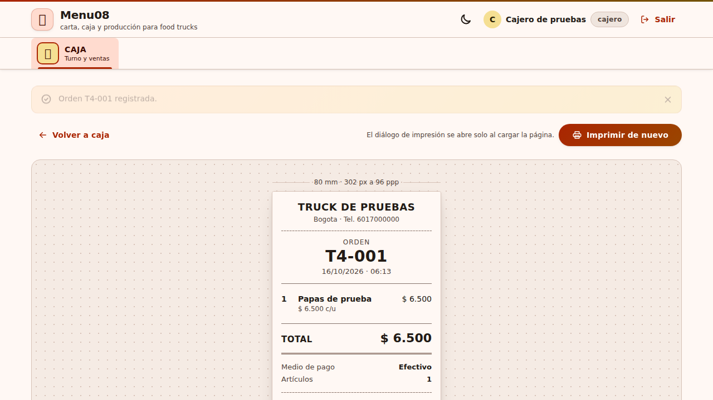
CP-AUTO-E2E-01-chromium-en_preparacion.png
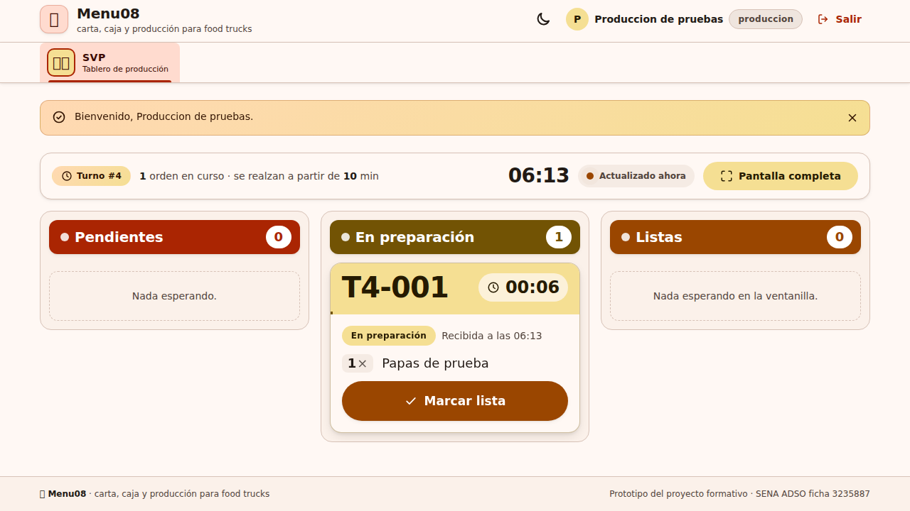
CP-AUTO-E2E-01-chromium-publico-en_preparacion.png
CP-AUTO-E2E-01-chromium-lista.png
CP-AUTO-E2E-01-chromium-publico-lista.png
CP-AUTO-E2E-01-chromium-entregada.png
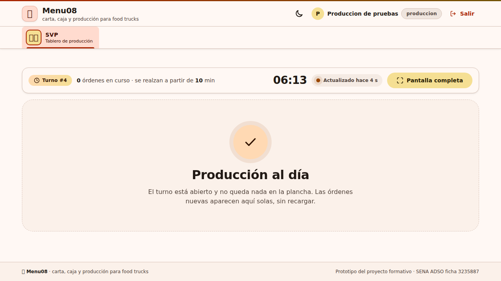
CP-AUTO-E2E-01-chromium-publico-entregada.png
CP-AUTO-E2E-01-chromium-cierre.png
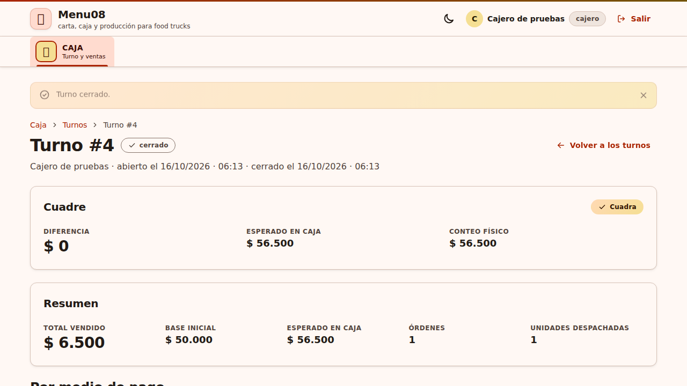
CP-AUTO-E2E-01-firefox-venta.png
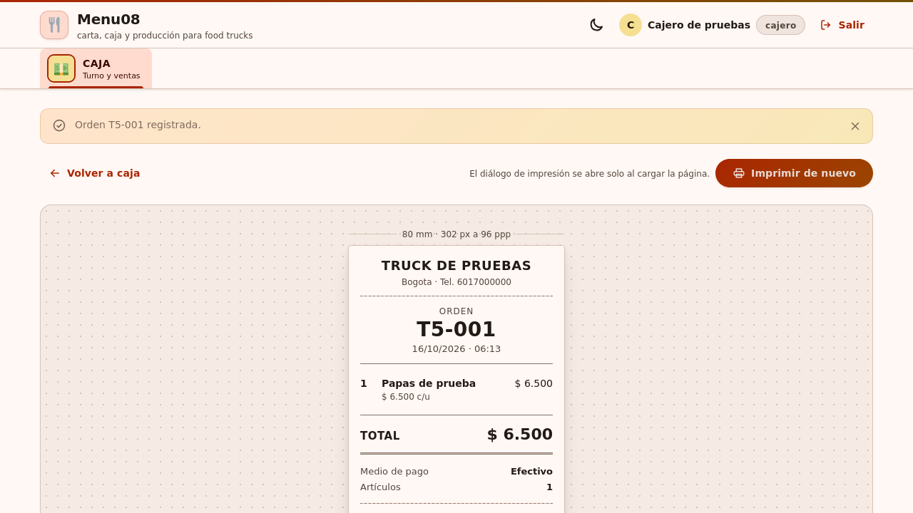
CP-AUTO-E2E-01-firefox-en_preparacion.png
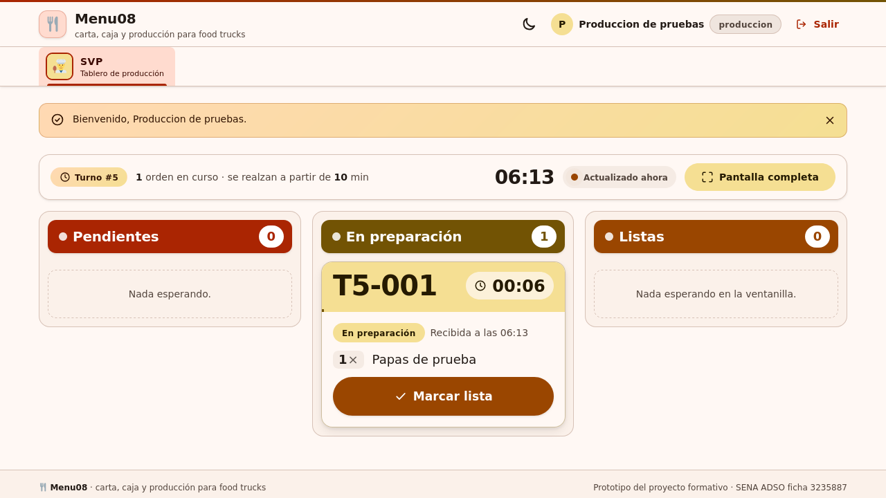
CP-AUTO-E2E-01-firefox-publico-en_preparacion.png
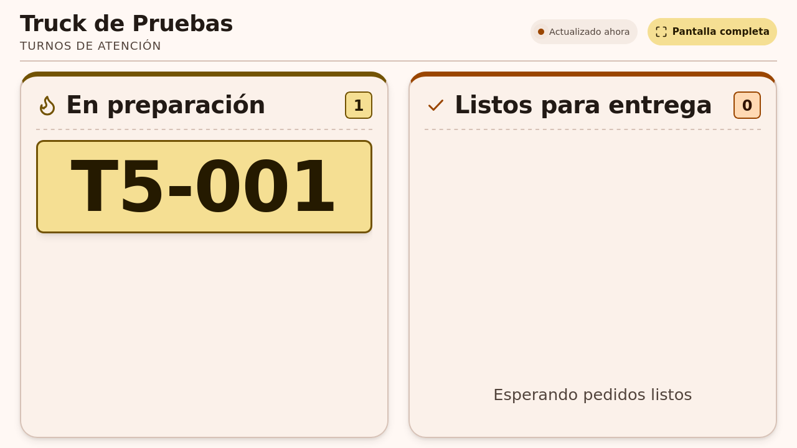
CP-AUTO-E2E-01-firefox-lista.png
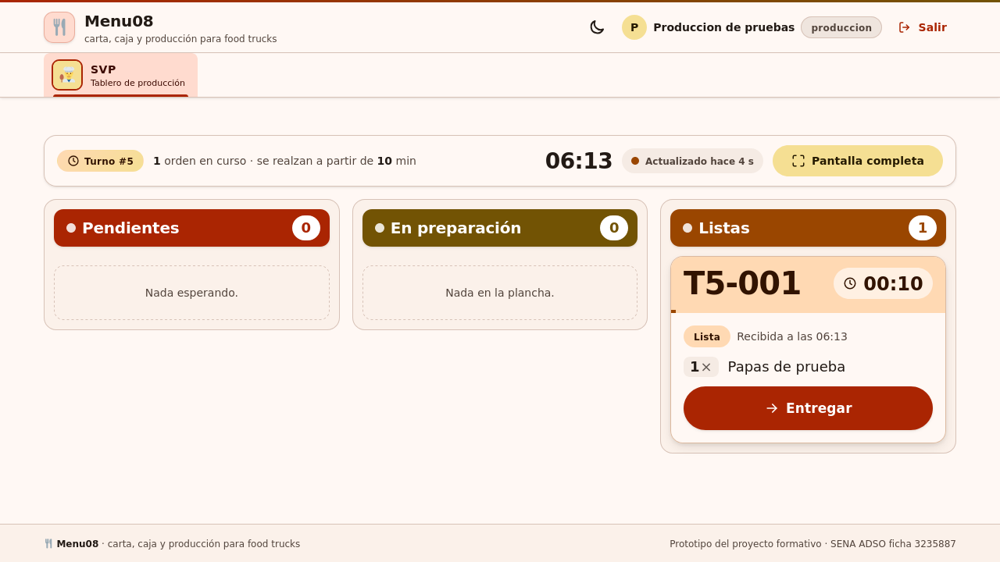
CP-AUTO-E2E-01-firefox-publico-lista.png
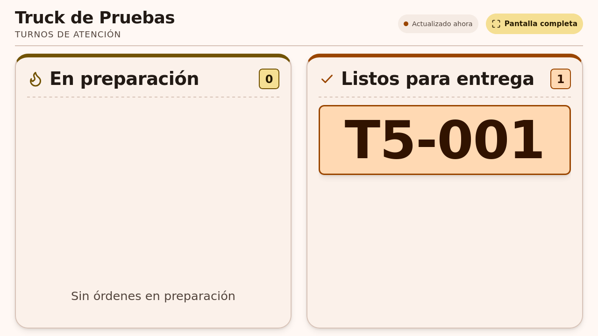
CP-AUTO-E2E-01-firefox-entregada.png
CP-AUTO-E2E-01-firefox-publico-entregada.png
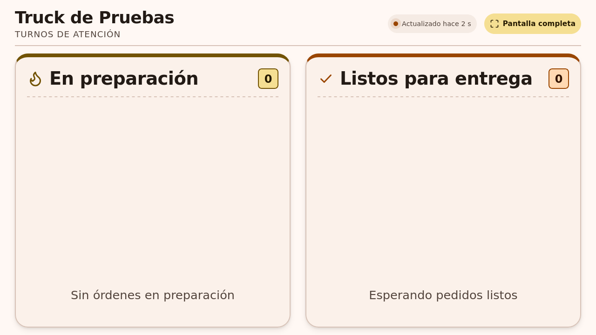
CP-AUTO-E2E-01-firefox-cierre.png
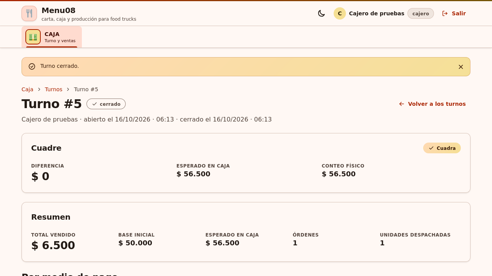